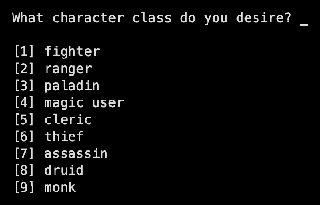
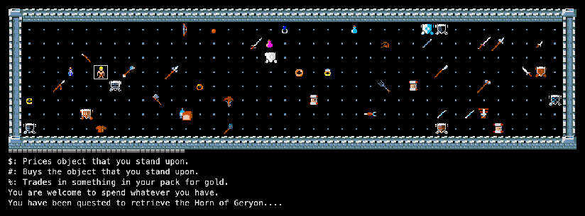
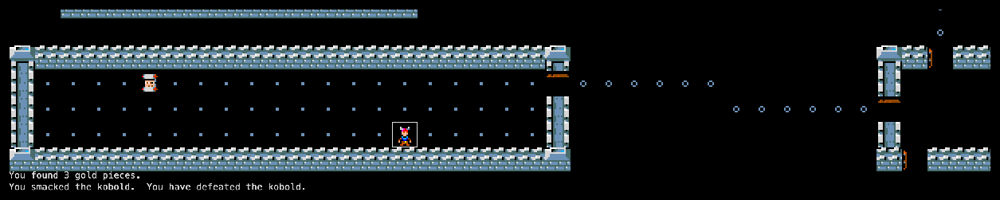
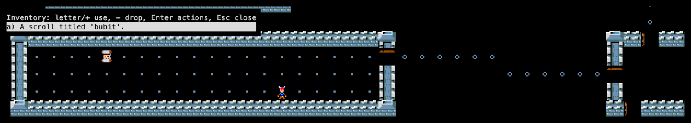

Advanced Rogue started from the Rogue 3.6 source with additions from Super-Rogue. Version 5.8 came first; 7.7 (1986) is the last Advanced Rogue, with more than twice as many classes. Its code went on into XRogue in the 1990s. See the family tree.
Credits
Michael Morgan
Lead developer
Ken Dalka
Lead developer
AT&T Bell Labs group
Development, 1984–86
Roguelike Restoration Project
Restored 7.7.1 (arogue7.7 @ 976b5bb)
Screenshots

The start: nine classes, then 72 points to spread over six abilities.

First steps: a new character begins in Friendly Fiend’s Equipage with gold to spend.

A fight: “You smacked the kobold. You have defeated the kobold.”

Inventory: our thief spent nothing and found a scroll titled ‘bubit’.
Trivia
AT&T distributed Advanced Rogue through its Toolchest software service. (RogueBasin)
A new character is dropped into a shop first: “Welcome to Friendly Fiend’s Equipage”. Later shops greet you as “Friendly Fiend’s Flea Market”. (source: trader.c)
The game has a slot for release news shown while you build your character. In 7.7 it says: “You no longer fall into trading posts. They are now entered like going down the stairs.” (source: init.c)
The quest can be any of 16 relics, among them the Eye of Vecna, the Quill of Nagrom (Morgan backwards) and the Amulet of Stonebones. (source: rogue.c)
What's unique
Nine classes with their own magic: magicians cast spells, clerics pray, druids chant; rangers, paladins, assassins and monks get their own tricks.
Point-buy characters: 72 points over six abilities (Escape fills in the maximums).
A random quest relic to bring back to the surface, and a starting shop to kit out your hero.
Outdoor levels, mazes, trading posts, 125 monsters and 22 kinds of miscellaneous magic.
Code dive
Language: K&R C, about 34,200 lines. Monsters, spells, prayers and chants are tables; a character class C_MONSTER lets monsters use the same code as players.
Environment: AT&T Unix and BSD on terminals via curses.
This port: X11 and WebAssembly via a curses shim, NetHack tiles. Source: memmaker/arogue7.7.